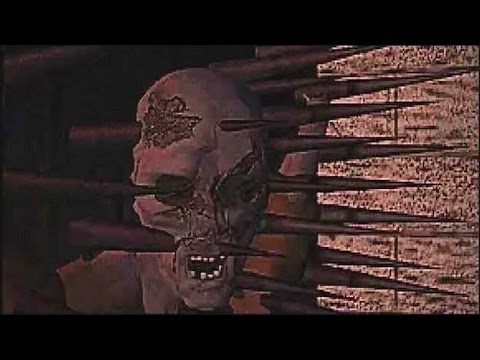
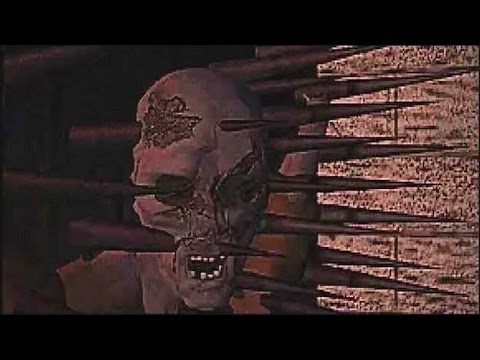

INSOMNIAC MINI-REVIEWS
RPGS
PLATFORMERS
ACTION/ADVENTURE
HORROR
Enemy Zero (Saturn)
by Michael Anthony
10/20/2020
Enemy Zero is a horror game released exclusively for the Sega Saturn in 1997. It was developed and released by Japanese indie game studio WARP and is the brain child of the late mad-genius Game designer Kenji Eno. It is known for it’s unique gameplay featuring invisible enemies that can only be detected and hunted entirely by sound.
Gameplay is divided into two styles. The first half is an indoors ,on rails adventure game exploration style that plays exactly like WARP’s previous game, “D.” In this mode the player finds and collects key items, can video phone crewmates, view a map, and solve puzzles required to advance in the game.
The other half is a free roaming, FPS mode featuring the aforementioned invisible enemies. During these segments the player character, Laura, explores the labyrinthian space ship while piano chimes clue her into the location of the enemies. A high pitch means they are in front of her, a mid range pitch is beside her, and a low pitch is behind. The speed and frequency of these pings tell Laura how close she is to the enemy. It is an ingenious system that I have never seen anywhere else. The uncertainty and level of awareness required to make progress keeps players anxious and fearful. I can honestly say it’s one of the scariest, (and also most challenging,) games I’ve played yet.
A gameplay sample of Enemy Zero
At first glance the story of Enemy Zero might seem to copy the movie Alien a little too closely, but upon another, deeper look it is clear that beyond the initial set up featuring a crew abruptly awakened from cryo-stasis on a freight crater headed to Earth and some aesthetics that it is indeed it’s own creature.
In Enemy Zero, you play as Laura, (not exactly the same Laura as in WARP’s previous game, D, WARP tried to establish Laura and other characters as “digital actors” of sorts.) Laura wakes up from cryogenic sleep with most of her memory failing her to discover a crewmate, Parker, being slaughtered by an invisible assailant. She sets out into the ship to discover what is going on, who this threat is, and find her surviving crewmates before it’s too late. Along the way there are several surprising plot and character twists and turns that keep the story engaging and fresh.
Parkers death sets off a dangerous mystery and the story and storytelling are wonderfully done. The cutscenes are excellently directed and everything unfolds at a good pace. One striking thing about all of this is Laura’s character. She is a silent protagonist and we as players get to build a great sense of who she is, something that does not come easily to silent protagonists. Usually they are merely blank player surrogates but here Kenji Eno and his team managed to make a plausible person.
I greatly enjoy Enemy Zero, but it is a bit tricky to recommend. The game is pretty pricy these days and on something of a cult platform, (unless you try to track down the PC port and even then good luck getting it working.) It does have a big difficulty curve. Each hit from an enemy results in an insta-death and the guns you use take a second to charge requiring the timing of each shot to be very precise. In addition, on most difficulty settings, the guns you get have a limited number of shots they can fire before running out of energy and must be recharged at charging stations scattered about the ship. I usually stick to easy or beginner difficulties to alleviate this added stress and there’s no shame to that.
The characters in Enemy Zero are a highlight, however and if these “features” and stressors don’t bother you however, a strong, well crafted, and unique gaming experience awaits you in Enemy Zero. I think it is most likely WARP and Kenji Eno’s best game. I hope that this little review piqued your interest enough to at least give it a look or give it a try, even if you have to dive into the messy world of Saturn emulation. There really is nothing else quite like it and that at least certainly says something.


IB (PC)
by Michael Anthony
10/18/2020Ib, (pronounced "Eeb",) is a solo developed indie horror game released in 2012 made in RGP Maker. Originally released only in Japanese, it has since been translated into English, Spanish, and Italian and all versions are available to download and play for free. Unlike many RPG Maker games, Ib has no turn-based/strategy combat or random encounters and instead focuses on immersing players through exploration and puzzle solving.
In Ib, young girl name and her parents visit an art gallery. Inside she finds a cryptic invitation to an "alternate" gallery and is lured away to a strange and dangerous art world. While trapped in this nightmare gallery, Ib meets 2 characters. Gary, who is older but strong and dependable and the cheerful yet cloying Mary. The three try to escape the cruel gallery and hopefully find out what's going on along the way.
During the game you switch between playing as Ib or Gary. Ib is young and can't make out some words or sentences on placards or in notes. This vulnerability helps keep tension and makes players want to explore more for better context. There is no real combat to be found, only enemies to avoid, and traps or obstacles to outsmart.
The world design, puzzles, and characters are all very well crafted. The plot is admittedly a little thin, but the small touches and characteristics really add up. The graphics are undeniably on the simple side. Ib was made using an older version of RPG Maker, even for its time. However, the design behind the art comes through enough to reel in the creeps. The games solid moody, atmospheric soundtrack definitely helps as well in that regard.
Ib might not have shocking jump scares or deep psychological twists, but the sense of vulnerability and helplessness, feeling lost, and the curious temptation on how things will advance make is a true contender in the horror genre.
Ib is a pretty short game but with multiple endings and a large collection of art to inspect there is plenty of replay value here for most gamers. It is one hundred percent worth the time to give it a try. The game is free after all. recommend it.


D (3DO, Saturn, PS1, PC)
by Michael Anthony
10/17/2020
D, (or D no shokutaku), created by Japanese indie game studio WARP, is a very early entry in the horror gaming genre. First released on the 3DO, Saturn, PS1, and PC in 1995, it was the first fully CGI video game and is an oft-forgotten gem in the horror gaming genre. While it was a huge success in Japan it just reached cult status in the west, but has more or less unanimously been praised for its daring approach and creative quirks.
In D, you play as Laura Harris who is called to a Los Angeles hospital after her father Doctor Richard Harris has gone on a sudden mass shooting spree inside. The police have called Laura to try and reach the mad doctor and talk him down from his madness. Upon entering the hospital however, Laura is warped to what seems to be a mid-evil castle. Upon witnessing a ghostly vision of her father trying to reach her, Laura decides to venture through the dangerous and twisted castle to find her father, save him, and unravel the mystery along the way.
The game plays sort of similarly to Myst and other PC adventure games at the time where you are on rails, moving from point to point by predetermined paths as you choose. It is unique with its storytelling, level of graphic scenes (which I would love to spoil here but they are too dang cool) for the time, and the fact that the game has a two hour time limit. If you don't solve the mystery by then Laura is trapped in the mysterious castle forever.
There are puzzles to solve as you advance through the castle and many cutscenes revealing scares and plot points. While they must have been impressive at their time, the graphics do look fairly dated today. Luckily D is so rich with atmosphere and tension and is blessed with good direction that the dated visuals don't really hamper the experience all too much. Even the terrible English voice acting doesn't hold the package down. (Much.)
D's Development has some crazy rich lore which is worth a look. It involves secret plot decisions, bridges burned with publishers, and an insane plot to bypass censor boards. Aside from the aforementioned voice acting and dated visuals I don't have many marks against D. It's two hour time limit does hamper replay value a little bit but I still take it out and enjoy it once or twice a year.
I say D is definitely worth a look!
Check it out.

 
